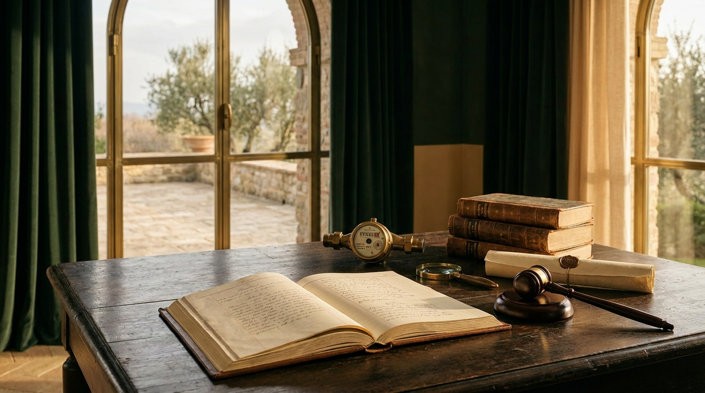

Bollette idriche anomale: chi paga in caso di consumi fuori scala
Una perdita occulta, un contatore impazzito, una bolletta dell'acqua da capogiro. Chi paga? La Cassazione, con la sentenza 20540/2025, sposta l'attenzione sull'utente: per contestare i consumi anomali occorre dimostrare di aver vigilato sull'impianto. Il silenzio del gestore non basta a liberare dall'obbligo di pagamento. Una pronuncia che pesa su privati e condomini.

Il caso e la decisione
La controversia è quella che molti riconoscono: una bolletta idrica con consumi sproporzionati rispetto allo storico, l'utente che contesta l'importo, il gestore che pretende il pagamento. Spesso all'origine c'è una perdita occulta — una rottura nascosta nella rete privata, a valle del contatore — che fa correre il misuratore senza che nessuno se ne accorga.
Con la sentenza n. 20540/2025 la Corte di Cassazione ha precisato un punto rilevante: l'utente che vuole sottrarsi al pagamento di consumi anomali deve provare di aver adottato una condotta diligente nella custodia e nel controllo del proprio impianto. Non è sufficiente invocare la mancata segnalazione tempestiva da parte del gestore.
Inquadramento normativo
Il rapporto tra gestore idrico e utente ha natura contrattuale: si tratta di una somministrazione, disciplinata dagli artt. 1559 e seguenti del Codice civile. L'obbligazione principale dell'utente è il pagamento del corrispettivo per la quantità di acqua erogata e misurata dal contatore.
Il contatore, salvo prova del suo malfunzionamento, fa fede della quantità consumata. Qui entra in gioco la ripartizione dell'onere della prova fissata dall'art. 2697 c.c.: chi vuole contestare la pretesa del gestore deve allegare e dimostrare i fatti che la escludono o la riducono.
La Cassazione collega questo principio al dovere di custodia dell'impianto privato. La rete a valle del contatore è nella sfera di controllo dell'utente. Una perdita occulta, di per sé, non sposta il consumo nella sfera di responsabilità del gestore: l'acqua è comunque transitata ed è stata misurata. Per evitare il pagamento, occorre dimostrare un comportamento diligente — letture periodiche, manutenzione, tempestiva verifica delle anomalie.
Il mancato avviso del gestore, secondo la Corte, può rilevare ma non azzera l'obbligo dell'utente, che resta titolare di un dovere autonomo di vigilanza sul proprio impianto.
Implicazioni pratiche
Per il consumatore privato la pronuncia significa una cosa precisa: la passività non protegge. Chi non controlla mai il contatore e non verifica eventuali oscillazioni dei consumi rischia di trovarsi nell'impossibilità di contestare efficacemente una bolletta anomala.
Il tema è ancora più delicato per i condomini, dove il contatore è spesso centralizzato e la rete interna serve più unità immobiliari. Qui la perdita occulta può generare importi consistenti e la ripartizione tra condòmini diventa fonte di contenzioso. L'amministratore ha un ruolo chiave: la vigilanza sull'impianto comune rientra tra i suoi compiti di gestione.
Resta ferma la possibilità di contestare il consumo dimostrando il malfunzionamento del contatore o un errore di lettura. Ma è una prova diversa e più tecnica, che richiede generalmente una verifica strumentale del misuratore.
Cosa fare in concreto
- Leggi periodicamente il contatore e annota i valori: una serie storica documentata è la prima prova della tua diligenza in caso di consumi anomali.
- Verifica subito le perdite occulte se la bolletta segnala un picco: un controllo dell'impianto con un tecnico può individuare rotture nascoste e fermare l'accumulo.
- Conserva la documentazione di manutenzioni, interventi e segnalazioni al gestore: serve a dimostrare di non essere rimasto inerte.
- In condominio, sollecita l'amministratore a effettuare controlli regolari sulla rete comune e a contabilizzare gli interventi.
- Contesta tempestivamente e per iscritto la bolletta anomala, chiedendo se possibile la verifica del contatore, prima di procedere al pagamento integrale o di valutare ulteriori azioni.
La lettura della sentenza conferma una logica diffusa nel diritto dei contratti: la diligenza non è un'opzione, ma il presupposto per far valere le proprie ragioni. Chi documenta i propri controlli si trova in una posizione processuale ben più solida di chi si limita a contestare l'importo a perdita avvenuta.
Disclaimer
Contributo informativo a cura di Tamburro & Partners - Avv. Giuseppe Tamburro. Non costituisce parere legale.
Ogni contratto ha il suo equilibrio.
Se vuoi una revisione delle clausole o una redazione su misura, scrivi allo studio. Ti rispondiamo entro un giorno lavorativo.